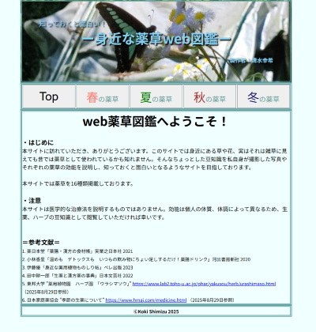

・作成した成果物

使用言語：HTML&CSS、JavaScript
作成日：2024/11/11
内容
四則演算に加えて累乗や剰余を求める計算を追加しました。また、更新せずに次の計算が出来るようにAC（リセット）ボタンを追加しました。デザイン面ではユーザがどんな演算を行ったか分かるようにしました。

＊注意 音が出ます
使用言語：HTML&CSS、JavaScript API：CanvasAPI
作成日：2025/01/10
内容
的に当たったらポイントが入るようにしました。工夫した点は、一部の早い動きの的は高得点が入るようにしたり、自作した効果音で的に当たったか分かりやすくしたシューティングゲームです。
使用言語：HTML&CSS、JavaScript ライブラリ：ml5.js
作成日：2025/07/25
内容
顔認識、手の認識、体の骨格の認識する機械学習のml5.jsライブラリを使ってwebカメラからリアルタイムで認識するサイトを作りました。
＊Webカメラの許可が必要です。

使用言語：HTML&CSS、JavaScript
作成日：2025/09/01
内容
私自身が撮影した写真やそれぞれの薬草の効能を説明し、知っておくと面白いとなるような薬草web図鑑を作成しました。